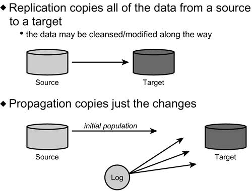

|
|
< Day Day Up > |
|
Populating a Data WarehouseAfter you design the data warehouse, you must move the appropriate data into it. You can use several methods to populate the data warehouse. Some methods, such as replication, propagation, and creating snapshots are relatively simple; others, such as various data transformation techniques, are more involved. Replication Versus PropagationYou learned about replication in Chapter 44, "Distribution Guidelines." To review, when data is replicated, one data store is copied to one or more locations. Replication can be implemented simply by copying entire tables to multiple locations. Alternatively, replicated data can be a subset of the rows and/or columns. You can tune replicas independently of one another. Different clustering strategies, different indexes, and different table space parameters might be appropriate at different locations. Propagation, on the other hand, is the migration of only changed data. Typically, propagation is implemented by scanning the transaction log and applying the results of the INSERT, UPDATE, and DELETE statements to another data store. Figure 45.4 shows the difference between replication and propagation. Figure 45.4. Replication versus propagation. Data warehouses can use both of these techniques to remain consistent with source data stores. Initial population of a data warehouse can be achieved by replication and subsequent population of changes by either replication (if the data is very dynamic) or propagation of changes only. SnapshotsSnapshots, also discussed in Chapter 44, are read-only copies of entire tables. A snapshot table is useful in a data warehouse only when the entire table is needed in exactly the same format as is used in the operational environment. Because data warehouses are integrated and optimized for query, you should not use snapshots very often. However, there is a major exception. The most popular type of data warehouse is an exact copy of the operational database duplicated for analytical querying. This type of data warehouse consists entirely of snapshot tables. The major benefit of the operational database copy is its ease of implementation. The drawbacks are myriad, including lack of integration, data not optimized for query, much of the data is codified and not easy to access, and so on. Yet, because of the relative simplicity of creating copies of operational tables, this type of data warehouse is sure to prosper. Data TransformationData transformation is the process of modifying data as it is moved from the operational and external sources to the target data warehouse or data mart. The four basic types of data transformation follow:
In the following sections, you examine each of these types. Simple TransformationSimple transformation is the underlying component of each of the other three types of data transformation. It can also stand on its own. A simple data transformation occurs on a single field. No additional analysis is performed as to the impact of the transformation on any other field that may be related to the transformed field. Examples of simple transformations include:
Aggregation and SummarizationData stored in data warehouses is usually summarized and aggregated at some level because of the vast size of most data warehouses coupled with the analytical processing that occurs on the warehouse data. Although summarization and aggregation are sometimes used interchangeably, you will find a subtle difference between the two. Summarization is the addition of like values along one or more business dimensions. An example of summarization is adding up detail revenue values by day to arrive at weekly totals (or by week to arrive at monthly totals, by month to arrive at quarterly totals, and so on). Aggregation refers to a summarization coupled with a calculation across different business elements. An example of aggregation is the addition of bimonthly salary to monthly commission and bonus to arrive at monthly employee compensation values. Depending on the data requirements of the warehouse, both summarization and aggregation can be deployed during data transformation. Summarization and aggregation are typically used for the following reasons:
Therefore, the data warehouse can consist of detail data as well as multiple levels of summarized and aggregated data across multiple dimensions. For example, revenue is stored at the detail level, as well as by month and by quarter, and also by product group and product type. NOTE
Data CleansingBefore data is moved to the data warehouse, it almost always must be cleansed (or scrubbed). Do not take this statement lightly. The true scope of a data cleansing project is enormous. Much of production data is dirty, and you don't even want to consider what work cleaning it up would take. By "dirty," I mean that it does not conform to proper domain definitions or "make sense." The age old adage "garbage in, garbage out" still applies, and you can do nothing about it short of analyzing and correcting the corporate data. Failure to do so results in poorly made business decisions. Basically, the two types of data cleansing are value validation and reformatting. Value ValidationValue validation is the process of ensuring that each value that is sent to the data warehouse is accurate. You've probably had that experience in which you look at the contents of one of your major flat files or database structures and intuitively know that the data is incorrect. No way could that employee be born in 1995. You know your company doesn't hire toddlers (even if some of your coworkers seem to act like children)! And that next record looks bad, too. How could she have been born in 1978 but hired in 1977. Most companies don't hire unborn embryos. All too often, these types of data integrity problems are glossed over. "No one would actually take that information seriously, would they?" Well, maybe people won't, but computerized systems will. That information can be summarized, aggregated, and/or manipulated in some way, and then populated into another data element. And when that data element is moved into the data warehouse, analytical processing will be performed on it that can affect the way your company does business. What if warehouse data is being analyzed to overhaul hiring practices? That data may make an impact on the business decisions if enough of the hire and birth dates are inaccurate. Small data discrepancies can become statistically irrelevant when large volumes of data are averaged. But averaging is not the only analytical function that is employed by analytical data warehouse queries. What about sums, medians, max/min, and other aggregate and scalar functions? Even further, can you actually prove that the scope of your data problems is as small as you think it is? The answer is probably "no." And the preceding is just one small example of the scope of the data integrity violations that many application systems allow to be inserted into production data stores. Some of the integrity violations may seem to be inexcusable. For example, you probably have discovered the SEX column (or field) that is supposed to store M or F. Frequently, you might see SEX data that defies imagination—everything from * to ! to a blank. These designations typically do not refer to a third sex; they are incorrect data values. Shouldn't programmatically forcing the values to be either M or F be a simple matter? The short answer is "yes," but this answer simplifies the matter too much. Many systems were designed to record this information, if available, but not to force the user to enter it. If you are a telephone marketer, the reasons for this are clear. Not everyone wants to reveal personal information, and acquiring the information independently is not always an easy matter. However, the organization would rather record incomplete information than no information. The organization is correct in wanting incomplete information over nothing. However, one problem is still ignored. The true problem is that a systematic manner of recording "unknown" values was not employed. Every program that can modify data should be forced to record a special "unknown" indicator if a data value is not readily available at the time of data entry. Most relational DBMS products allow data columns to store a "null," indicating "unknown" or "unavailable" information. Pre-relational DBMS products and flat files do not have this option. However, you can choose some specific, standard default value. The trick is to standardize on the default value. One of the key components of value validation should be the standardization of "unknown" values. This process can be tedious. The primitive examples outlined in the preceding paragraphs use data elements with a domain of two valid values. Most data elements have domains that are considerably more complex. Determining which are valid values and which are not can be difficult for someone who is not intimately aware of the workings of the application systems that allowed the values to be inserted in the first place. Is 1895-01-01 a valid date for a field or is it a default for an "unknown" value? Nineteenth century dates may be valid for birth dates, stock issuance dates, account inception dates, publication dates, and any number of other dates with long periods of "freshness." Just because the program allows it to be put there, though, that does not mean it is actually a valid date. A user can easily type 1895 instead of 1995. If the data entry program is not intelligent enough to trap these types of errors, the systems will insert dirty data into production data stores. This type of data integrity problem is the most difficult to spot. Likely, only the business person who understands the data and the business requirements can spot these types of problems. A similar scenario can occur for future dates. Is 2112-01-01 a valid date? Or did the user type 2112 instead of 2002? Once again, you need to know the type of data that is valid for the application. Future dates can be valid for long-term contracts, deeds, pre-need burial contracts, or any number of other dates having long term validity. ReformattingThe format of data in the source system does not always conform to the desired format of data in the data warehouse. For example, you might choose to store addresses as they would appear on an envelope, as opposed to storing them as a group of separate address lines or atomic address fields (that is, city, state, ZIP). Other examples include the formatting of orders with associated items or the formatting of any type of data to look like forms used by the analysts accessing the data warehouse. Automating Data TransformationData transformation is typically implemented using a third-party tool that eases the definition and implementation of the various forms of transformation. However, creating home-grown programs to perform data transformation is possible, though time consuming. When you're deciding which approach to use, keep the following five questions in mind:
As for the cleansing process, you truly cannot avoid human interaction completely when attempting to clean dirty data. The best approach is to clean the data at the source. If you don't clean the data there, dirty data will continue to be stored in the organization and sent to the data warehouse. Of course, the data transformation tool can catch and correct some of these values, but it is impractical to assume that all data anomalies can be captured if they are not corrected at the source. IntegrationThe fourth, and final, type of data transformation is integration. Integration can be the most difficult component of the transformation process. Data warehouses are populated with data from multiple sources, both local and remote; internal and external. Integration is the process of rationalizing data elements received from multiple disparate sources. It is possible that a single data element in the data warehouse can be populated from more than one source. For example, competitive pricing information might be received from multiple research firms. One firm might store the data in a decimal format, another in an integer format, and yet another in decimal format, but with more significant digits. Before the pricing data can be moved to the data warehouse, it must be modified to conform to a single definition. Another integration problem can occur when data from multiple sources must be combined into a single data element in the data warehouse. This frequently takes the form of a calculated or derived result. The different types of integration that you might encounter are indeed impossible to predict. Data elements in different applications, systems, and organizations will follow different business rules, be impacted by different administration and coding practices, and, in general, be different. Therefore, you must implement flexible integration procedures to be prepared for the many different data types and formats that you will encounter when populating your data warehouse. |
|
|
< Day Day Up > |
|